26 Numerics library [numerics]
26.9 Mathematical functions for floating point types [c.math]
26.9.5 Mathematical special functions [sf.cmath]
If any argument value to any of the functions specified in this subclause is a NaN (Not a Number), the function shall return a NaN but it shall not report a domain error. Otherwise, the function shall report a domain error for just those argument values for which:
the function description's Returns: clause explicitly specifies a domain and those argument values fall outside the specified domain, or
the corresponding mathematical function value has a non-zero imaginary component, or
the corresponding mathematical function is not mathematically defined.289
Unless otherwise specified, each function is defined for all finite values, for negative infinity, and for positive infinity.
A mathematical function is mathematically defined for a given set of argument values (a) if it is explicitly defined for that set of argument values, or (b) if its limiting value exists and does not depend on the direction of approach.
26.9.5.1 Associated Laguerre polynomials [sf.cmath.assoc_laguerre]
double assoc_laguerre(unsigned n, unsigned m, double x);
float assoc_laguerref(unsigned n, unsigned m, float x);
long double assoc_laguerrel(unsigned n, unsigned m, long double x);
Effects: These functions compute the associated Laguerre polynomials of their respective arguments n, m, and x.
Returns: 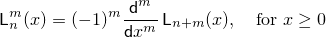 where n is n, m is m, and x is x.
26.9.5.2 Associated Legendre functions [sf.cmath.assoc_legendre]
double assoc_legendre(unsigned l, unsigned m, double x);
float assoc_legendref(unsigned l, unsigned m, float x);
long double assoc_legendrel(unsigned l, unsigned m, long double x);
Effects: These functions compute the associated Legendre functions of their respective arguments l, m, and x.
Returns:
![\[%
\mathsf{P}_\ell^m(x) =
(1 - x^2) ^ {m/2}
\:
\frac{ \mathsf{d} ^ m}
{ \mathsf{d}x ^ m} \, \mathsf{P}_\ell(x),
\quad \mbox{for $|x| \le 1$}
\]](math/7280053638369289593.png) where
l is l,
m is m, and
x is x.
where
l is l,
m is m, and
x is x.
26.9.5.3 Beta function [sf.cmath.beta]
double beta(double x, double y);
float betaf(float x, float y);
long double betal(long double x, long double y);
Effects: These functions compute the beta function of their respective arguments x and y.
Returns: 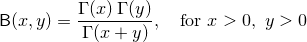 0$,\, $y > 0$} \]'/> where x is x and y is y.
26.9.5.4 (Complete) elliptic integral of the first kind [sf.cmath.comp_ellint_1]
double comp_ellint_1(double k);
float comp_ellint_1f(float k);
long double comp_ellint_1l(long double k);
Effects: These functions compute the complete elliptic integral of the first kind of their respective arguments k.
Returns: K(k) = F(k, π / 2), for |k| ≤ 1 where k is k.
See also [sf.cmath.ellint_1].
26.9.5.5 (Complete) elliptic integral of the second kind [sf.cmath.comp_ellint_2]
double comp_ellint_2(double k);
float comp_ellint_2f(float k);
long double comp_ellint_2l(long double k);
Effects: These functions compute the complete elliptic integral of the second kind of their respective arguments k.
Returns: E(k) = E(k, π / 2), for |k| ≤ 1 where k is k.
See also [sf.cmath.ellint_2].
26.9.5.6 (Complete) elliptic integral of the third kind [sf.cmath.comp_ellint_3]
double comp_ellint_3(double k, double nu);
float comp_ellint_3f(float k, float nu);
long double comp_ellint_3l(long double k, long double nu);
Effects: These functions compute the complete elliptic integral of the third kind of their respective arguments k and nu.
Returns: Π(ν, k) = Π(ν, k, π / 2), for |k| ≤ 1 where k is k and nu is nu.
See also [sf.cmath.ellint_3].
26.9.5.7 Regular modified cylindrical Bessel functions [sf.cmath.cyl_bessel_i]
double cyl_bessel_i(double nu, double x);
float cyl_bessel_if(float nu, float x);
long double cyl_bessel_il(long double nu, long double x);
Effects: These functions compute the regular modified cylindrical Bessel functions of their respective arguments nu and x.
Returns: 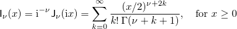 where nu is nu and x is x.
See also [sf.cmath.cyl_bessel_j].
26.9.5.8 Cylindrical Bessel functions (of the first kind) [sf.cmath.cyl_bessel_j]
double cyl_bessel_j(double nu, double x);
float cyl_bessel_jf(float nu, float x);
long double cyl_bessel_jl(long double nu, long double x);
Effects: These functions compute the cylindrical Bessel functions of the first kind of their respective arguments nu and x.
Returns: 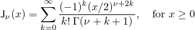 where nu is nu and x is x.
26.9.5.9 Irregular modified cylindrical Bessel functions [sf.cmath.cyl_bessel_k]
double cyl_bessel_k(double nu, double x);
float cyl_bessel_kf(float nu, float x);
long double cyl_bessel_kl(long double nu, long double x);
Effects: These functions compute the irregular modified cylindrical Bessel functions of their respective arguments nu and x.
Returns:
![\[%
\mathsf{K}_\nu(x) =
(\pi/2)\mathrm{i}^{\nu+1} ( \mathsf{J}_\nu(\mathrm{i}x)
+ \mathrm{i} \mathsf{N}_\nu(\mathrm{i}x)
)
=
\left\{
\begin{array}{cl}
\displaystyle
\frac{\pi}{2}
\frac{\mathsf{I}_{-\nu}(x) - \mathsf{I}_{\nu}(x)}
{\sin \nu\pi },
& \mbox{for $x \ge 0$ and non-integral $\nu$}
\\
\\
\displaystyle
\frac{\pi}{2}
\lim_{\mu \rightarrow \nu} \frac{\mathsf{I}_{-\mu}(x) - \mathsf{I}_{\mu}(x)}
{\sin \mu\pi },
& \mbox{for $x \ge 0$ and integral $\nu$}
\end{array}
\right.
\]](math/136333380479809245.png) where
nu is nu and
x is x.
where
nu is nu and
x is x.
26.9.5.10 Cylindrical Neumann functions [sf.cmath.cyl_neumann]
double cyl_neumann(double nu, double x);
float cyl_neumannf(float nu, float x);
long double cyl_neumannl(long double nu, long double x);
Effects: These functions compute the cylindrical Neumann functions, also known as the cylindrical Bessel functions of the second kind, of their respective arguments nu and x.
Returns: 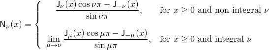 where nu is nu and x is x.
See also [sf.cmath.cyl_bessel_j].
26.9.5.11 (Incomplete) elliptic integral of the first kind [sf.cmath.ellint_1]
double ellint_1(double k, double phi);
float ellint_1f(float k, float phi);
long double ellint_1l(long double k, long double phi);
Effects: These functions compute the incomplete elliptic integral of the first kind of their respective arguments k and phi (phi measured in radians).
Returns: 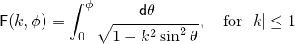 where k is k and phi is phi.
26.9.5.12 (Incomplete) elliptic integral of the second kind [sf.cmath.ellint_2]
double ellint_2(double k, double phi);
float ellint_2f(float k, float phi);
long double ellint_2l(long double k, long double phi);
Effects: These functions compute the incomplete elliptic integral of the second kind of their respective arguments k and phi (phi measured in radians).
Returns: 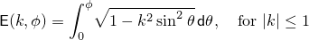 where k is k and phi is phi.
26.9.5.13 (Incomplete) elliptic integral of the third kind [sf.cmath.ellint_3]
double ellint_3(double k, double nu, double phi);
float ellint_3f(float k, float nu, float phi);
long double ellint_3l(long double k, long double nu, long double phi);
Effects: These functions compute the incomplete elliptic integral of the third kind of their respective arguments k, nu, and phi (phi measured in radians).
Returns:
![\[%
\mathsf{\Pi}(\nu, k, \phi) =
\int_0^\phi \! \frac{ \mathsf{d}\theta }
{ (1 - \nu \, \sin^2 \theta) \sqrt{1 - k^2 \sin^2 \theta} },
\quad \mbox{for $|k| \le 1$}
\]](math/4836649422931108564.png) where
nu is nu,
k is k, and
phi is phi.
where
nu is nu,
k is k, and
phi is phi.
26.9.5.14 Exponential integral [sf.cmath.expint]
double expint(double x);
float expintf(float x);
long double expintl(long double x);
Effects: These functions compute the exponential integral of their respective arguments x.
Returns: 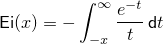 where x is x.
26.9.5.15 Hermite polynomials [sf.cmath.hermite]
double hermite(unsigned n, double x);
float hermitef(unsigned n, float x);
long double hermitel(unsigned n, long double x);
Effects: These functions compute the Hermite polynomials of their respective arguments n and x.
Returns:
![\[%
\mathsf{H}_n(x) =
(-1)^n e^{x^2} \frac{ \mathsf{d} ^n}
{ \mathsf{d}x^n} \, e^{-x^2}
\;
\]](math/9005139879380335226.png) where
n is n and
x is x.
where
n is n and
x is x.
26.9.5.16 Laguerre polynomials [sf.cmath.laguerre]
double laguerre(unsigned n, double x);
float laguerref(unsigned n, float x);
long double laguerrel(unsigned n, long double x);
Effects: These functions compute the Laguerre polynomials of their respective arguments n and x.
Returns: 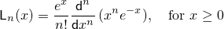 where n is n and x is x.
26.9.5.17 Legendre polynomials [sf.cmath.legendre]
double legendre(unsigned l, double x);
float legendref(unsigned l, float x);
long double legendrel(unsigned l, long double x);
Effects: These functions compute the Legendre polynomials of their respective arguments l and x.
Returns: 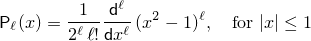 where l is l and x is x.
26.9.5.18 Riemann zeta function [sf.cmath.riemann_zeta]
double riemann_zeta(double x);
float riemann_zetaf(float x);
long double riemann_zetal(long double x);
Effects: These functions compute the Riemann zeta function of their respective arguments x.
Returns: 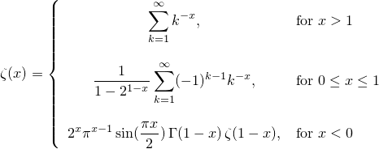 1$} \\ \\ \displaystyle \frac{1}{1 - 2^{1-x}} \sum_{k=1}^\infty (-1)^{k-1} k^{-x}, & \mbox{for $0 \le x \le 1$} \\ \\ \displaystyle 2^x \pi^{x-1} \sin(\frac{\pi x}{2}) \, \Gamma(1-x) \, \zeta(1-x), & \mbox{for $x < 0$} \end{array} \right. \; \]'/> where x is x.
26.9.5.19 Spherical Bessel functions (of the first kind) [sf.cmath.sph_bessel]
double sph_bessel(unsigned n, double x);
float sph_besself(unsigned n, float x);
long double sph_bessell(unsigned n, long double x);
Effects: These functions compute the spherical Bessel functions of the first kind of their respective arguments n and x.
Returns: jn(x) = (π/2x)1/2 Jn + 1/2(x), for x ≥ 0 where n is n and x is x.
See also [sf.cmath.cyl_bessel_j].
26.9.5.20 Spherical associated Legendre functions [sf.cmath.sph_legendre]
double sph_legendre(unsigned l, unsigned m, double theta);
float sph_legendref(unsigned l, unsigned m, float theta);
long double sph_legendrel(unsigned l, unsigned m, long double theta);
Effects: These functions compute the spherical associated Legendre functions of their respective arguments l, m, and theta (theta measured in radians).
Returns:
Yℓm(θ, 0)
where
![\[%
\mathsf{Y}_\ell^m(\theta, \phi) =
(-1)^m \left[ \frac{(2 \ell + 1)}
{4 \pi}
\frac{(\ell - m)!}
{(\ell + m)!}
\right]^{1/2}
\mathsf{P}_\ell^m
( \cos\theta ) e ^ {i m \phi},
\quad \mbox{for $|m| \le \ell$}
\]](math/7858298838263879409.png) and
l is l,
m is m, and
theta is theta.
and
l is l,
m is m, and
theta is theta.
See also [sf.cmath.assoc_legendre].
26.9.5.21 Spherical Neumann functions [sf.cmath.sph_neumann]
double sph_neumann(unsigned n, double x);
float sph_neumannf(unsigned n, float x);
long double sph_neumannl(unsigned n, long double x);
Effects: These functions compute the spherical Neumann functions, also known as the spherical Bessel functions of the second kind, of their respective arguments n and x.
Returns: nn(x) = (π/2x)1/2 Nn + 1/2(x), for x ≥ 0 where n is n and x is x.
See also [sf.cmath.cyl_neumann].